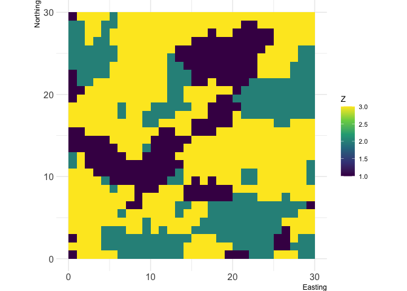

README last updated: 2024-07-29
| CI | Development | CRAN | License |
|---|---|---|---|
 |
Starting from v2.0.0, landscapemetrics uses
terraandsfinternally. More information about theterrapackage can be found here: https://rspatial.org/index.html.
Overview
landscapemetrics is a R package for calculating landscape metrics for categorical landscape patterns in a tidy workflow. The package can be used as a drop-in replacement for FRAGSTATS (McGarigal et al. 2023), as it offers a reproducible workflow for landscape analysis in a single environment. It also allows for calculations of four theoretical metrics of landscape complexity: a marginal entropy, a conditional entropy, a joint entropy, and a mutual information (Nowosad and Stepinski 2019).
landscapemetrics supports terra, and stars and takes SpatRaster or stars spatial objects as input arguments. Every function can be used in a piped workflow, as it always takes the data as the first argument and returns a tibble.
Citation
To cite landscapemetrics or acknowledge its use, please cite the following Software note, substituting the version of the application that you used for ‘v0.0’:
Hesselbarth, M.H.K., Sciaini, M., With, K.A., Wiegand, K., Nowosad, J. 2019. landscapemetrics: an open‐source R tool to calculate landscape metrics. Ecography, 42: 1648-1657 (v0.0).
For more information see Publication record vignette. The get a BibTex entry, please use citation("landscapemetrics").
Installation
There are several ways to install landscapemetrics:
# Get the stable version from CRAN
install.packages("landscapemetrics")
# Alternatively, you can install the development version from Github
# install.packages("remotes")
remotes::install_github("r-spatialecology/landscapemetrics")Using landscapemetrics
The resolution of a raster cell has to be in meters, as the package converts units internally and returns results in either meters, square meters or hectares. Before using landscapemetrics, be sure to check your raster (see check_landscape()).
All functions in landscapemetrics start with lsm_ (for landscape metrics). The second part of the name specifies the level (patch - p, class - c or landscape - l). The last part of the function name is the abbreviation of the corresponding metric (e.g. enn for the euclidean nearest-neighbor distance):
# general structure
lsm_"level"_"metric"
# Patch level
## lsm_p_"metric"
lsm_p_enn()
# Class level
## lsm_c_"metric"
lsm_c_enn()
# Landscape level
## lsm_p_"metric"
lsm_l_enn()All functions return an identical structured tibble:
| layer | level | class | id | metric | value |
|---|---|---|---|---|---|
| 1 | patch | 1 | 1 | landscape metric | x |
| 1 | class | 1 | NA | landscape metric | x |
| 1 | landscape | NA | NA | landscape metric | x |
Using metric functions
Every function follows the same implementation design, so the usage is quite straightforward:
library(landscapemetrics)
library(terra)
# internal data needs to be read
landscape <- terra::rast(landscapemetrics::landscape)
# landscape raster
plot(landscape)
# calculate for example the Euclidean nearest-neighbor distance on patch level
lsm_p_enn(landscape)
#> # A tibble: 28 × 6
#> layer level class id metric value
#> <int> <chr> <int> <int> <chr> <dbl>
#> 1 1 patch 1 1 enn 7
#> 2 1 patch 1 2 enn 4
#> 3 1 patch 1 3 enn 2
#> 4 1 patch 1 4 enn 6.32
#> 5 1 patch 1 5 enn 5
#> 6 1 patch 1 6 enn 2.24
#> 7 1 patch 1 7 enn 2
#> 8 1 patch 1 8 enn 4.12
#> 9 1 patch 1 9 enn 4.12
#> 10 1 patch 2 10 enn 4.47
#> # ℹ 18 more rows
# calculate the total area and total class edge length
lsm_l_ta(landscape)
#> # A tibble: 1 × 6
#> layer level class id metric value
#> <int> <chr> <int> <int> <chr> <dbl>
#> 1 1 landscape NA NA ta 0.09
lsm_c_te(landscape)
#> # A tibble: 3 × 6
#> layer level class id metric value
#> <int> <chr> <int> <int> <chr> <dbl>
#> 1 1 class 1 NA te 181
#> 2 1 class 2 NA te 203
#> 3 1 class 3 NA te 296There is also a wrapper around every metric in the package to quickly calculate a bunch of metrics:
# calculate all metrics on patch level
calculate_lsm(landscape, level = "patch")
#> Warning: Please use 'check_landscape()' to ensure the input data is valid.
#> # A tibble: 336 × 6
#> layer level class id metric value
#> <int> <chr> <int> <int> <chr> <dbl>
#> 1 1 patch 1 1 area 0.0001
#> 2 1 patch 1 2 area 0.0005
#> 3 1 patch 1 3 area 0.0072
#> 4 1 patch 1 4 area 0.0001
#> 5 1 patch 1 5 area 0.0001
#> 6 1 patch 1 6 area 0.008
#> 7 1 patch 1 7 area 0.0016
#> 8 1 patch 1 8 area 0.0003
#> 9 1 patch 1 9 area 0.0005
#> 10 1 patch 2 10 area 0.0034
#> # ℹ 326 more rowsUtility functions
landscapemetrics further provides several visualization functions, e.g. show all labeled patches or the core area of all patches. All visualization functions start with the prefix show_ (e.g. show_cores()).
Important building blocks of the package are exported to help facilitate analysis or the development of new metrics. They all start with the prefix get_. All of them are implemented with Rcpp and have either memory or performance advantages compared to raster functions.
For more details, see the vignette("utility").
Contributing
One of the major motivations behind landscapemetrics is the idea to provide an open-source code collection of landscape metrics. This includes, besides bug reports, especially the idea to include new metrics and functions. Therefore, in case you want to suggest new metrics or functions and in the best case even contribute code, we warmly welcome to do so! For more information see CONTRIBUTING.
Maintainers and contributors must follow this repository’s CODE OF CONDUCT.
References
McGarigal K., SA Cushman, and E Ene. 2023. FRAGSTATS v4: Spatial Pattern Analysis Program for Categorical Maps. Computer software program produced by the authors; available at the following web site: https://www.fragstats.org/
Nowosad J., TF Stepinski. 2019. Information theory as a consistent framework for quantification and classification of landscape patterns. https://doi.org/10.1007/s10980-019-00830-x